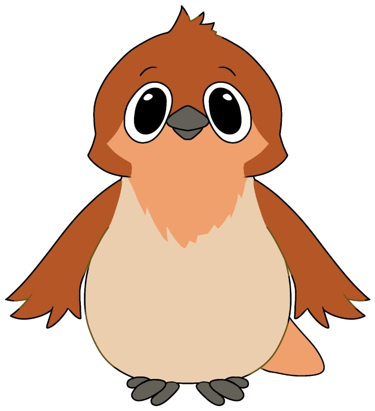
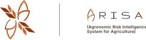
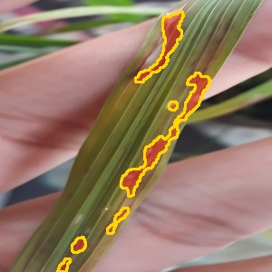

ARISA: Agronomic Risk Intelligence System for Agriculture
Pemantauan & Diagnosis Penyakit Padi
Sistem cerdas berbasis U-Net Semantic Segmentation dan Edge-AI Classifier. Memindai kontur lesi daun, mengukur indeks keparahan DSI, dan mengkalkulasi skor risiko agronomis IARI pada tanaman padi.
Pengujian Sampel Daun Padi
Pilih sampel daun di bawah, putar roda, atau unggah citra mandiri untuk analisis segmentasi U-Net dan skor risiko IARI.
PUTAR
Klik tombol untuk pengujian acak, atau pilih langsung salah satu sampel daun di bawah.
Unggah Citra Daun
Pilih file citra atau foto kamera daun padi lapangan untuk dianalisis oleh model AI.
Pilih atau Ambil Foto
JPG, PNG, WebP
Uji Cepat File Lapangan:
Blas Daun
DSI: 14.68% (Ringan)

Segmentasi AI (U-Net)
Blas Daun (Rice Blast)
Pyricularia oryzae (Magnaporthe)
Indeks Risiko Agronomis Terintegrasi (IARI)
SIAGA
19.08
/ 100
IARI = (DSI × Wfase) × Ccuaca
(14.68% × 1.3) × 1.0 = 19.08
Aman (<10)
Waspada (10-20)
Siaga (20-50)
Bahaya (≥50)
Akurasi Model
88.9%
Indeks DSI & Skala SES
14.68% (Skala 3)
Fase Pertumbuhan
Generatif (Bobot W: 1.3)
Segmentasi Lesi U-Net
2.790 px lesi / 19.001 px
Raspberry Pi 4 (INT8 TFLite)
412 ms
Cloud Server (FP32 GPU)
89 ms
Validasi Kanopi Gatekeeper: Lolos (Kanopi Padi Valid)
Nilai ExG: 28.4 (Ambang Batas ≥ 15.0) • Rasio Kanopi: 0.68 (Ambang Batas ≥ 0.25) • Latar Belakang Negatif
Rekomendasi Penanganan PPL:
Semprotkan fungisida sistemik trisiklazol atau isoprotiolan. Kurangi pemupukan Nitrogen (urea) berlebih saat musim hujan.